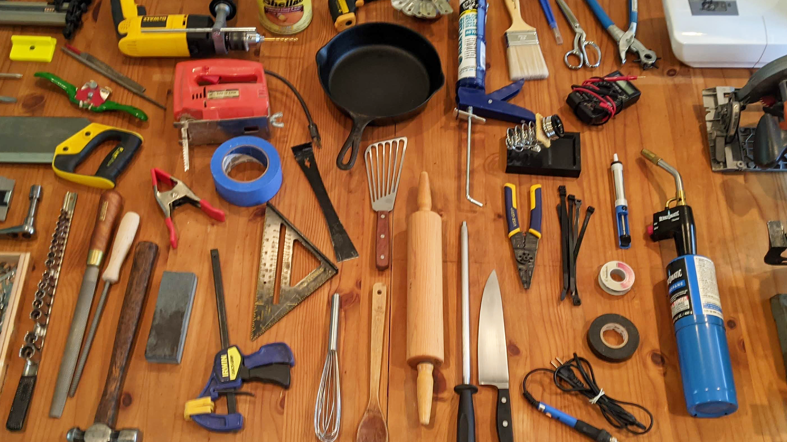

For Current Members
Currently, our volunteer and steward sign-up process is going through updates. Check back later for application links!
Help Fellow Makers

Got skills or experiences with a particular tool or area? Got tools from home to share? Join our Discord and create your Maker Profile.
Join A Team

Would you like to join a specific team behind the scenes for the makerspace?
Fill out our volunteer application form and check our roles page to learn more!
Become a Steward

Are you an enthusiast for specific tools/areas in the makerspace? Consider becoming a Steward! Stewards are responsible for:
- Training other members
- Administering certifications
- Maintaining our tools and equipment